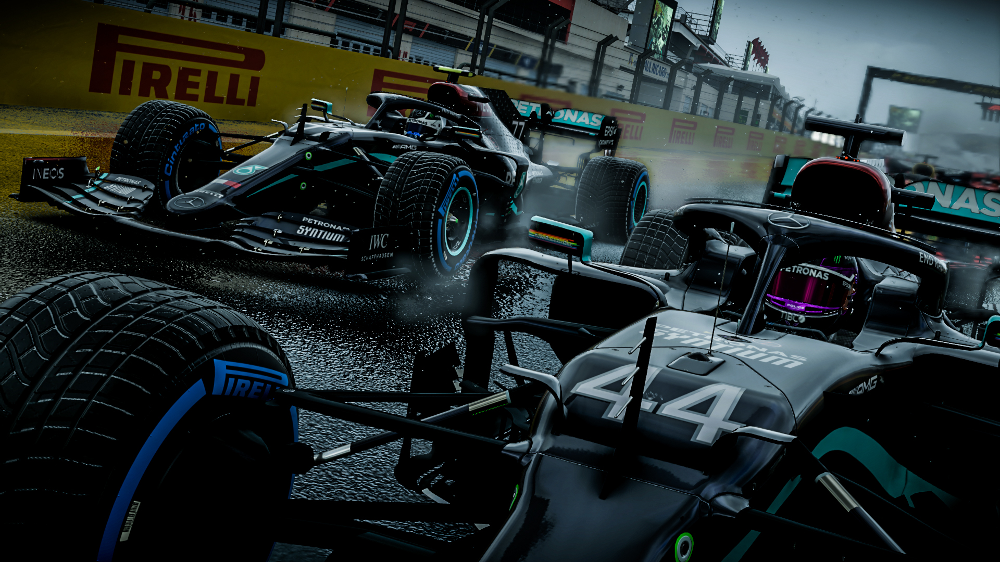

Mercedes AMG F1 Petronas es un equipo de origen alemán con sedes en Brackley y Brixworth, en Gran Bretaña. Originalmente Daimler poseía el 60% del equipo, Toto Wolff el 30% y Niki Lauda el 10%. Desde diciembre de 2020, el accionariado está compuesto por Daimler, Toto Wolff e Ineos a partes iguales. El origen de Mercedes en el automovilismo de Grandes Premios se remonta a la década de 1930, cuando el constructor fue una de las fuerzas dominantes del panorama europeo. Ganó el título europeo en 1935, 1937 y 1938 con Rudolf Caracciola como piloto estrella y Alfred Neubauer como director deportivo.
